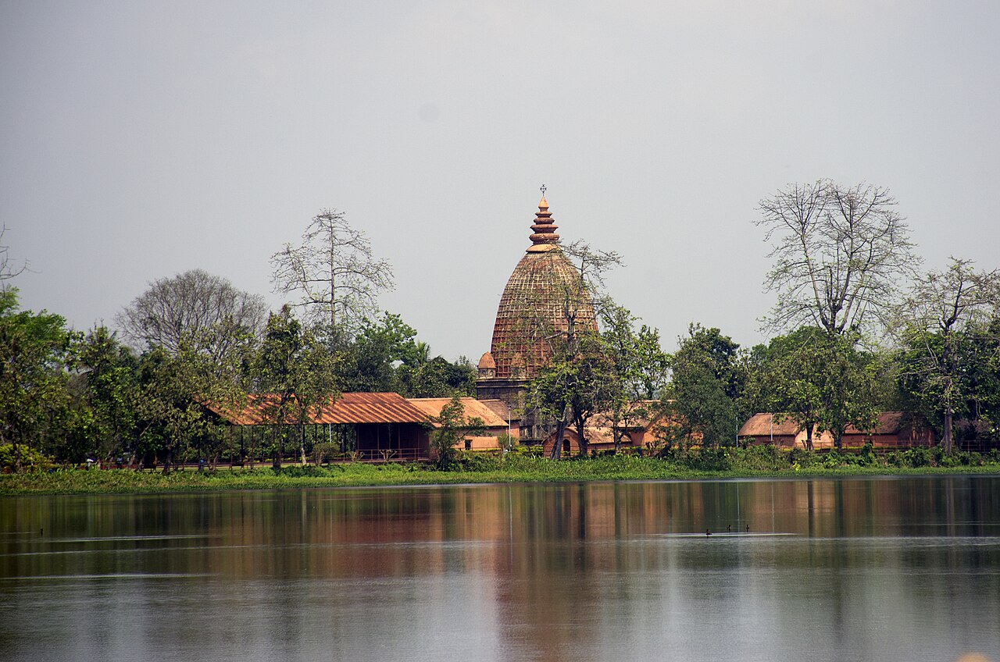

৪৫ দিনত
এখন সাগৰ।
A "sea", dug in 45 days.
আহোম যুগৰ
সাগৰৰ ৰেচিপি
ৰেচিপি · ০০৫
কোনে
ৰুদ্ৰ সিংহ
কাৰ স্মৃতিত
মাতৃ জয়মতী
চন
১৬৯৭
সময়
৪৫ দিন
Joysagar: dug for Rudra Singha's mother, Joymoti.
দিন ১
হাজাৰ হাজাৰ মানুহ
সাগৰ সাজু!
০
একৰ
প্ৰায়
১৮০ খন
ফুটবল পথাৰ
318 acres with its banks: about 180 football fields.
জয়সাগৰ
Sivasagar, Assam · real photo

Photo: Rangan Datta, Wikimedia Commons, CC BY-SA 4.0
মাতৃৰ স্মৃতিত এখন সাগৰ।
আজিও আছে।
৪৫ দিনত
এখন সাগৰ।
আহোমৰ ৰেচিপি · ০০৫